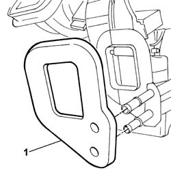
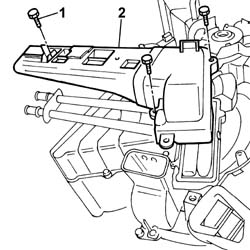
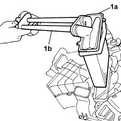
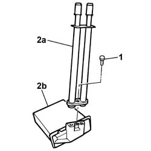

5020A54 heater radiator - r+r with heater box removed
- Path
- Procedures > 50 AUXILIARY UNITS > 5020 HEATER > 5020A box and components > 5020A54 heater radiator - r+r with heater box removed
- Kind
- repair procedure (removal / refitting; the operation number is the code)
- Applies to
- all engines; all production periods
- Interactive page
- https://sloeber94.github.io/elrnDB-fPnd/en/#/2752870
Applies to: all engines; all production periods
 Removing
Removing
 Refitting
Refitting1. Remove the sound insulation seal.

Applies to: all engines; all production periods
1. Undo the retaining bolts.
2. Remove the pipe guard.

Applies to: all engines; all production periods
1. Release the fastening clips on the heater casing and remove the radiator (1a) complete with water supply and return pipes (1b).

Applies to: all engines; all production periods
1. Undo retaining bolts
2. Separate the water supply and return pipes (2a) from the radiator (2b).

Applies to: all engines; all production periods
Refitting
RemovingCheck the condition of the water supply and return pipe seals and, if necessary, replace them.
Positino the water supply and return pipes on the radiator.
Place the nut inside the housing on the radiator.
Tighten the retaining bolt.
Check the condition of the radiator seal and, if necessary, replace it.
Position the radiator complete with water supply and return pipes and check that it is secure.
Position the pipe guard and tighten the fixing bolts.
Check the condition of the sound insulation seal and, if necessary, replace it.
Position the sound insulation seal.